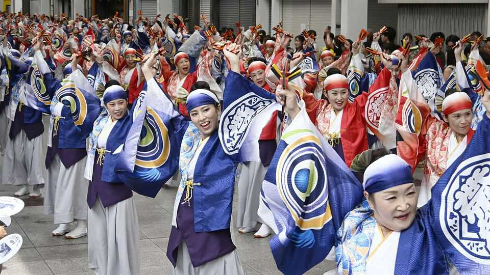

The Japanese region where “eight-testicle women” outdo men
It’s a matter of sake and hard work

Nov 12th 2026
Susaki, a fishing town on Japan’s Shikoku island, boasts plenty of charms, including fresh seafood, nabeyaki ramen (served piping hot in a clay pot), and Shinjo-kun, an otter mascot wearing said noodles on its head. Locals also take pride in hachikin—spirited, outspoken, hard-working women with a reputation for outdoing men. The term, which comes from the local Tosa dialect, is used throughout Kochi prefecture. Its origins are murky, but according to a popular theory it combines hachi (eight) and kintama (testicles). A hachikin, in other words, has the cojones of four men.
Not everyone welcomes the label because of its vulgar origins, but plenty embrace it. Takenaka Kanako, a Susaki local who runs a soy-sauce factory, says being called a hachikin is a compliment; she greets your correspondent wearing a T-shirt emblazoned with the English words “Eight Balls”. Asked what makes Kochi’s women so formidable, Kusunose Kosaku, Susaki’s mayor, points to their ability to hold their drink. At local festivals, he recalls, some women knock back prodigious amounts of sake in one go.
Yet there is more to hachikin than drinking prowess. Kochi ranks first among Japan’s 47 prefectures for economic gender parity. Women have relatively high employment rates, and the gap in earnings between men and women is comparatively narrow. Miura Mari of Sophia University points to men’s earnings as a key factor. In wealthier, industrial areas, the male-breadwinner model remains strong. But in poorer places such as Kochi, men’s low wages make women’s labour indispensable to household finances and to the local community.
That does not make Kochi a feminist utopia. Women are severely underrepresented in politics, including on local councils. And the term hachikin can mask uncomfortable truths. Idolising women’s resilience can gloss over the burdens they bear, from earning a living while continuing to shoulder much of the housework and child care. “Men hardly pull their weight, and women end up doing all the work. It makes me furious,” says Ms Takenaka. ■
For exclusive coverage of Asian politics, economics and security, sign up to Asia Bulletin, our weekly subscriber-only newsletter.